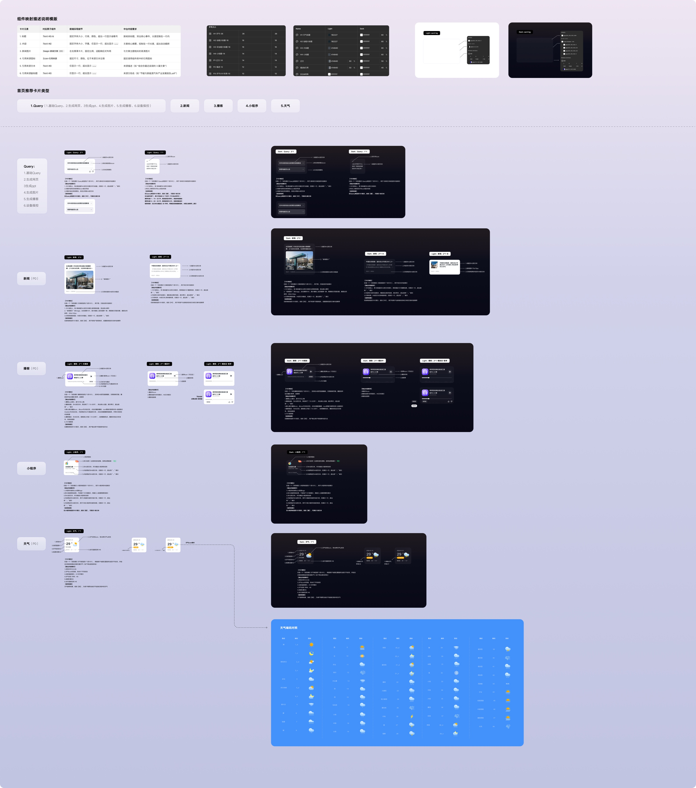
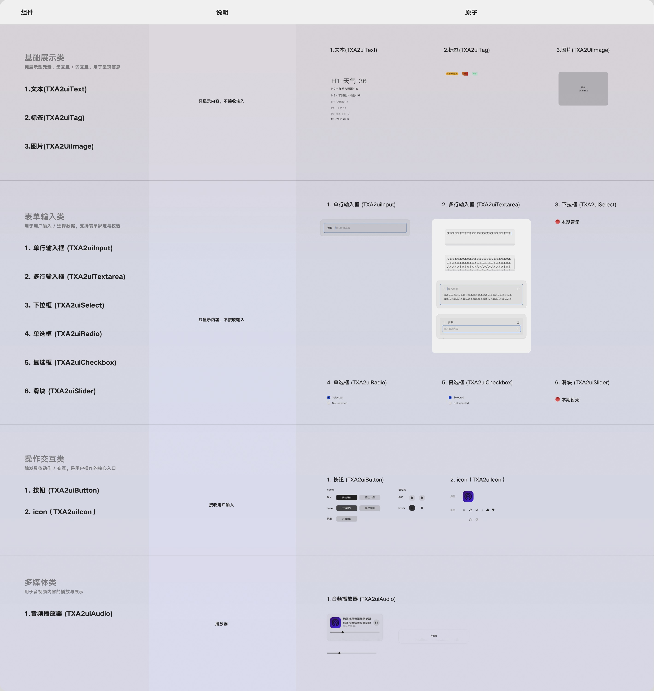
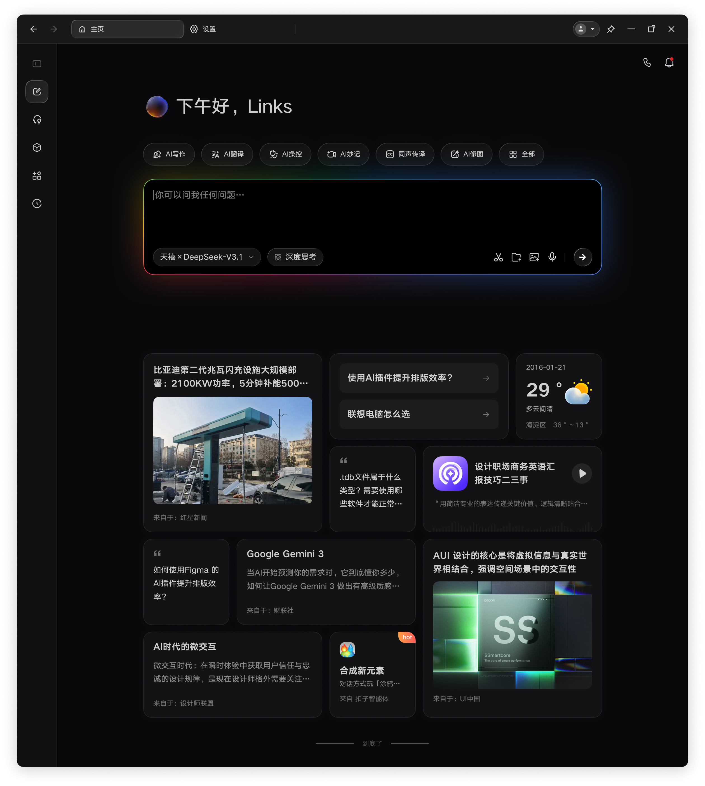

01 / WHY GENERATIVE UI
01用户意图我现在想完成什么？→
02AI 理解与选择内容 · 权重 · 组件→
03客户端校验规则 · 安全 · 设备→
04生成界面适合当前任务的 UI
DESIGNER DEFINES设计师预先定义组件、Token、Grid、状态、主题与安全边界。
AI DECIDESAI 动态决定理解内容、判断权重、选择组件与组合方式。
CLIENT CONTROLS客户端最终控制Schema 校验、可信组件、品牌一致性与设备适配。
AI DECISION
MODEL
理解内容
判断权重
选择组件
→
生成的运营卡片内容 + 尺寸 + 信息密度 + 组合
DESIGN TOKENS卡片组件规范色彩与排版体系间距与布局体系内容安全边界
01 → 02先把这套逻辑跑通，再回头拆解：设计师如何把判断变成 AI 能理解的规则。
DESIGN TRANSLATION / DESIGN.MD
先把设计能力，
转译成 AI 能执行的规则。
设计师不是把页面交给 AI 自由绘制，而是将组件、Token、字号、间距、Grid、内容权重与安全边界整理成 design.md，明确什么可以生成、如何组合，以及不同状态下如何调整。
DESIGN.MD 不是普通文档，而是把设计判断转译成 AI 可执行的规则层。
DESIGN.MD / DESIGN SYSTEM INPUT把设计判断转译成 AI 可执行的规则
COMPONENT TRANSLATION / DESIGN SEMANTICS
再把组件能力，
转译成 AI 能理解的语义。
设计师为每类组件定义内容字段、信息权重、尺寸、状态、Light / Dark 主题与使用边界，让模型不仅看见组件长什么样，也理解每个字段代表什么、何时调用，以及在不同内容与场景下如何组合。
AI 不只需要知道组件长什么样，还需要知道它什么时候出现、可以放什么内容，以及不能做什么。
01组件拆解→
02字段与语义标注→
03状态与主题映射→
04模型可调用能力

CLICK TO INSPECT FULL MAPPING
COMPONENT SEMANTIC MAPPING / AI-READABLE SPEC字段 · 权重 · 状态 · Light / Dark · 使用边界
DARK THEME

LIGHT THEME
TIANXI A2UI / TRUSTED COMPONENT LIBRARY深色 / 浅色主题 · 可信组件 · 状态 · 交互能力
02 → 03规则和组件准备好之后，AI 才能在边界内动态组织一次真实的首页体验。
GENERATED HOME / TIANXI OUTCOME
联想天禧 PC 首页，
让内容与 UI 一起为
用户生成。
系统综合用户的搜索、点击与关注记录，判断当下意图和内容权重；再在 design.md 与组件库的约束内，生成对应的内容、卡片尺寸、信息密度与首页组合。
这是一次基于用户当下意图生成的首页结果，不是固定模板。
01用户连续意图→
02AI 判断内容与权重→
03组件动态组合→
04专属首页

GENERATIVE UI OUTPUT卡片样式与内容，均由 AI 在设计规则与可信组件能力约束内自动生成。
HOME EXPERIENCE RESULT搜索 · 点击 · 关注 → 内容与 UI 生成
FROM OUTPUT TO SYSTEM看见一次生成结果之后，继续追问：它如何被设计、校验，并稳定地交付到不同设备？
02 / CORE TENSION
DESIGNER / CLIENT预先定义组件目录、Tokens、语义、状态与安全边界
MODEL / AGENT动态判断理解用户意图，决定内容、权重与组件组合
USER EXPERIENCE持续生成让首页随着用户当下任务变化，而不是固定成一张静态页面
03 / HOW IT GENERATES
CLIENT-CONTROLLED FOUNDATION组件目录 · 语义提示 · Data Model · Design Tokens · 状态规则客户端预先定义能力边界，Agent 只能请求已允许的组件与动作
01 / AGENT LEARNSAI 理解用户关注点学习并整理用户最关注的问题，结合目标与上下文提炼需求
→
02 / AGENT SENDS发送流式 JSON 消息声明内容、结构、数据与操作，不发送可执行代码
→
03 / CLIENT RENDERER客户端校验并绑定组件检查 AI 消息是否符合规则，将内容与数据绑定到允许的原生组件
→
04 / NATIVE UI原生组件渲染按设备能力与客户端主题输出真实界面
设计师与客户端预先定义组件目录、语义、Tokens 与状态边界
Agent 动态发送流式 JSON 消息，描述内容、数据与操作
客户端 Renderer 执行校验消息，将数据绑定到可信原生组件并完成多端渲染
03 → 04当客户端掌握了渲染边界，同一套任务语义就可以在不同设备上用各自合适的方式继续。
04 / CROSS-DEVICE RENDERING
ONE SYSTEM, MULTIPLE DEVICES
让 Agent 能描述，让 Renderer 能校验，
让 Phone、Pad、PC 都能原生渲染。
一套生成式 UI 规范，定义内容、组件、状态与主题；Phone、Pad、PC 依据自己的设备能力，原生表达同一条任务。
不是为每个端重复设计业务页面，而是共享任务语义、数据与动作协议，让生成式 UI 真正落地到各端。
具体场景 同一个“整理旅行计划”任务：Phone 负责即时确认，Pad 负责浏览与比较，PC 负责完整规划与资料整理。
ONE GENERATIVE UI STANDARD
一套规范适配不同设备：语义保持一致，布局、密度与操作方式由各端原生表达。
VISUAL视觉设计原子颜色 · 排版 · 间距 · 圆角 · 图标
ANATOMY组件内部构成结构 · 插槽 · 内容 · 操作 · 反馈
STATE交互状态默认 · 聚焦 · 输入 · 错误 · 禁用
THEME浅色 / 深色同一语义，不同主题稳定渲染
SHARED TASK SEMANTICS
同一套规范，同一条任务
contentdataactionstate
行程确认•••
TODAY · 14:30前往机场首都机场 T3 · 预计 42 分钟当前位置T3 航站楼
TRIP PLAN前往机场今天 14:30 前到达
AB
ROUTE A42 min推荐 · 稳定ROUTE B51 min少收费
ACTIVE TASK机场出行方案比较路线、时间与风险
ROUTE OVERVIEWTIME42 min预计 13:48 到达RISKLOW拥堵概率 12%
生成式 UI 不是让 AI 自由绘制界面，而是让 AI 在设计与运行时边界内，动态组织最适合当前任务的界面。